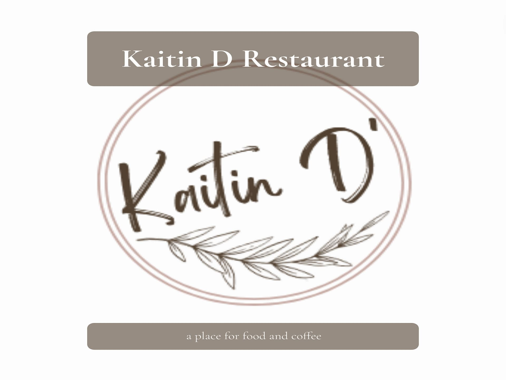

Kaitin D Project
Branding | Logo Design | Mockups & Wireframes
Kaitin D is the beginning of a larger project,
which we intend to continue once we have time. It was a never-finished assignment that we were going to
use as our first project, but the lack of experience ended up burying it among other tasks.
This is the rebranding of an Asian and fusion food restaurant that also has a coffee shop and other hot drinks.
Rebranding of Kaitin D: Fusing Elegance and Tradition
General information:
- Context: An Asian and fusion food restaurant with a cafeteria and hot drinks.
- Objective: Create a visual identity that transmits elegance and at the same time is affordable.
- Existing Logo: A previous logo was created using information provided in the brief.
Business description:
- Type of Food: Preparation and distribution of Asian food.
- Star Product: A special dish with a secret recipe available in multiple stores in the country.
- Target Audience: Large family groups.
Vision for Rebranding:
1. Elegance and Tradition:
- Fusing traditional Asian elements with a touch of contemporary elegance.
- Transmit the cultural richness and authenticity of food.
2. Colors and Style:
- Brown: Represents the earth, nature and warmth.
- Gold or Yellow: Elegance and prosperity.
- Source of Inspiration: Ceramic patterns, fabrics and Asian ornamental elements.
Visual Identity Elements:
1. Logo:
- Combined Branding: Merging Asian characters (such as kanji or hanzi) with modern typography.
- Brown Color: Dominant in the logo to evoke the earth and authenticity.
2. Iconography:
- Use iconic Asian elements such as teapots, chopsticks, tea leaves or bamboo branches.
- Incorporate subtle details that reflect the secret recipe.
3. Website:
- Clean and easy to navigate design.
- Highlight images of the dishes, the restaurant decoration and the culinary experience.
Key Message:
- "Kaitin D: Where tradition meets elegance."
Future of the Project:
- Although the project was pending, consider resuming it in the future to expand the brand digitally and physically.
This rebranding is an opportunity to revitalize the image of Kaitin D
and attract new customers while maintaining the loyalty of family groups. ü•¢üçúüåø
